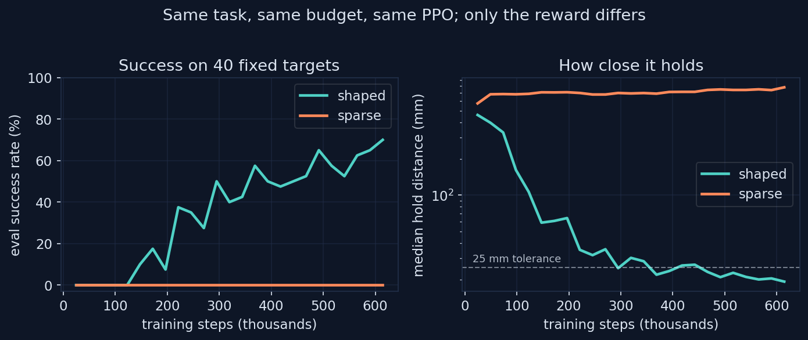
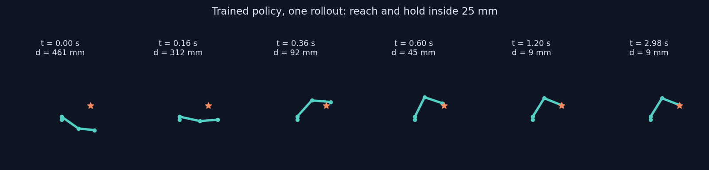

0%
SUCCESS, SPARSE REWARD
A gymnasium environment around the same 3-DOF gravity-loaded arm, a PPO reward shaping ablation, and the part that matters: the debugging. Two environment bugs made reinforcement learning look impossible, and both were found the way an engineer finds them, with scripted baselines, constraint-force inspection, and an honest comparison against a reference implementation.
Reach a randomly placed 3D target with the fingertip and hold it inside a 25 mm tolerance. The arm is the project 1 and 2 hardware model: three torque-controlled joints, joint damping and dry friction at the identified values, a 250 g payload, and a 6 Nm torque budget per joint. Episodes run 3 seconds at 50 Hz control. Success requires the mean fingertip error over the final 0.4 s to sit inside tolerance, so the policy must arrive and hold, not fly through.
Targets are sampled by drawing joint configurations, running forward kinematics, and rejecting anything below 10 cm height. Sampling in joint space guarantees every target is reachable, and keeping the generating configuration makes a scripted joint-space baseline possible, which turned out to be the most valuable diagnostic tool in the project.
The first training runs flatlined at 0% success with the median fingertip error stuck near 600 mm, so before touching a hyperparameter the environment got a controller of known quality: a joint-space PD driving toward each target's generating configuration. It also scored 0%, which acquitted the learning algorithm and indicted the physics.
A minimal torque test told the rest. Two newton meters commanded on the yaw joint moved it to 0.046 rad and froze it there, with the constraint solver reporting a reaction torque of exactly minus 2.0 Nm and zero contacts active. A joint frozen by a constraint at qpos 0.046 with nothing touching it means a joint limit, and 0.046 rad is 2.6 degrees. MJCF parses angles as degrees by default. Ranges written as radians had compiled 57 times too small, and the whole arm was living inside a 2.6 degree cone.
Not the learning curves. A scripted PD baseline plus a look at qfrc_constraint. Constraint forces balancing actuation at a pose far from any declared limit, with zero contacts, is a two-minute diagnosis once the right signal is on screen.
With the units fixed, the PD baseline improved to a 71 mm median hold, and that number is itself informative: a proportional controller with gain 30 fighting a 4 Nm gravity load leaves tau/kp of about 0.13 rad of droop, which is roughly 85 mm at the fingertip. Adding a gravity feedforward closed it to 7.2 mm and 67% success. The environment was feasible. RL still learned nothing.
The reason was measurable. Holding the arm up takes plus 2 to plus 4.3 Nm at the shoulder. A zero-mean Gaussian exploration policy essentially never samples that region, so every rollout collapses into the same fallen pose, and the returns stop carrying information about the actions. The correlation between advantages and action noise measured 0.02 to 0.07 with sign flips between batches, for a from-scratch PPO and for reference Stable-Baselines3 PPO alike: SB3 sat at 0% success after a quarter-million steps on the broken task. When two independent implementations fail identically, the environment is the suspect.
The fix is what real arms do. Impedance-controlled robots run model-based gravity compensation in the low-level controller, and the policy commands residual torque around it. In MuJoCo that is one attribute, gravcomp="1" on the moving links. The same PD that drooped 71 mm scores 72% with a 9.3 mm median hold under compensation, with no feedforward and no model knowledge, and learning finally has a gradient to climb.
Gravity compensation is computed from the model, so it is exactly as good as the identification behind it. You can only compensate the gravity you have modeled. That is the thread running through this whole portfolio: model quality is not an academic score, it is control authority.
With the environment trustworthy, the experiment is clean. Two PPO runs, identical budgets of 600k steps, identical seeds, hyperparameters, and network. Only the reward differs.
The progress term is potential-based shaping with potential proportional to distance, which provably cannot change the optimal policy, but converts "get closer" from a multi-step credit assignment inference into one-step credit. Evaluation is deterministic on 40 fixed targets every 25k steps, so the curves measure the policy, not the exploration noise.


70% is not 100%, and the failures are structured: targets requiring large yaw swings behind the arm are where the deterministic policy still misses, and a single training seed per arm of the ablation means the exact numbers carry seed noise. The from-scratch PPO written for this project was retired after the reference comparison; its policy gradient sat below the trajectory-variance noise floor at this batch size, and the honest move was to localize the remaining problems with a known-good trainer rather than ship a hand-rolled one. The environment, reward design, baselines, and evaluation harness are the work product here.
pip install mujoco gymnasium stable-baselines3 numpy matplotlib
python src/train_p3.py # both arms of the ablation, ~35 min CPU
python src/make_figures.py # curves and rollout filmstrip